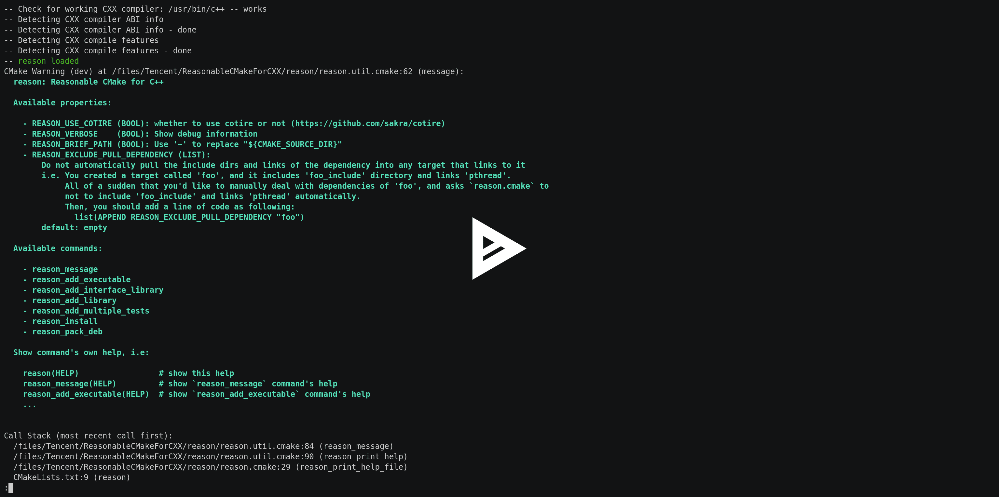

Get Started¶
Simple Project without modules¶
Setup:
Create a project
mkdir -p demo/ cd demo/Create C++ project tree
mkdir -p include/demo/ mkdir -p src/ mkdir -p test/
Create header, source and test files
cat <<EOF > include/demo/demo.hpp #pragma once #include <string> std::string fn_demo(); EOF
cat <<EOF > src/demo.cpp #include <demo/demo.hpp> std::string fn_demo() { return "I'm demo!"; } EOF
cat <<EOF > src/main.cpp #include <demo/demo.hpp> #include <iostream> int main() { std::cout << fn_demo() << '\n'; return 0; } EOF
cat <<EOF > test/test1.cpp #include <demo/demo.hpp> #include <cassert> int main() { assert(std::string("I'm demo!") == fn_demo()); } EOF # Just create the second test by copying the test1 cp test/test1.cpp test/test2.cpp
Clone
reason.cmake
Create CMakeLists.txt to build the project
# Minimum Required CMake Version is 3.3 cmake_minimum_required(VERSION 3.3) project(demo VERSION 1.0.0) # Customize install path, by default it is '/usr/local/', # which requires root permission set(CMAKE_INSTALL_PREFIX "${CMAKE_SOURCE_DIR}/install/") # Add reason to CMAKE_MODULE_PATH list(APPEND CMAKE_MODULE_PATH "${CMAKE_SOURCE_DIR}/reason.cmake/") # use reason.cmake include(reason) set(PROJECT_SRCS "src/demo.cpp") reason_add_library( STATIC SHARED # build both static and shared library TARGET "demo" INC_DIRS "include" SRCS "${PROJECT_SRCS}") reason_add_executable(TARGET "demo" SRCS "src/main.cpp" LINKS "demo_s") reason_install(TARGETS "demo" "demo_s" "demo_d" INC_DIRS "include") # Enable testing for testing submodules reason_add_multiple_tests( TEST_NAME "test_demo" SRCS "test/test1.cpp" "test/test2.cpp" LINKS "demo_d") enable_testing() set(CPACK_GENERATOR "STGZ;TGZ;TZ") reason_pack_deb( CONTACT "My Name Here <mail@example.com>" ARCH "amd64" DEBDEP "libc6 (>= 2.4)" SECTION "devel" PRIORITY "optional") include(CPack)
The current project tree should look like:
tree .
. ├── CMakeLists.txt ├── include │ └── demo │ └── demo.hpp ├── src │ ├── demo.cpp │ └── main.cpp └── test ├── test1.cpp └── test2.cpp 4 directories, 5 files
Build the project
mkdir -p build/ cd build/ cmake ../ make -j$(nproc) make test make package # Create 'sh', 'tar.gz', 'tar.Z', 'deb' packages make install # install to 'CMAKE_INSTALL_PREFIX'
# Show the install directory ls ../install/ # Install debian package using dpkg (optional) # (Needs root permission) sudo dpkg -i ./demo.deb
Getting Help Information¶
Normally you would like to know how to use a cmake function, but you know that cmake functions does not provide help generally.
But reason.cmake has help!
Use :code:reason(HELP), reason_add_executable(HELP) .. to show help information,
for example:
Advanced Examples¶
See example projects here: ReasonableCMakeForCXX